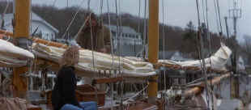

|
Message
in a Bottle(SE)C+,A |
|
Warner/1999/131/ANA
2.35 |
Warning: This bottle contains excess artificial sweetener. It’s
palatable, but after finishing the bottle there’s a definite bitter
aftertaste. I guess that’s what you call a bittersweet romance. Message
in a Bottle has some good elements going for it and for a lot of the
time it is fairly involving. But the film veers off course for too often.
The actions of the characters are suspect and when you start doubting, you
may well wind up lost at sea.
|

|
|
Getting to know you. ©Warner |
Garret is a ship builder pining away for his lost love. Theresa is a
newspaper feature writer hungry for a story. While strolling on the beach
she finds a bottle containing a message. It’s a love letter that stirs
her emotions and whets her appetite. She is determined to find the letter
writer.
Robin Wright makes
Theresa an attractive reporter and a good match for Kevin Costner’s
laconic and poetic Garret. It’s no secret that Theresa solves her
mystery, but mystery stirs up other mysteries, in this case mysteries of
the heart. Paul Newman lends attractive support as Garret’s Dad.
Director Luis Mandoki has the difficult task of mastering the rough waters
of this script. His stars often rise above the plot contrivances, but some
of the waves are so unexpected and out of proportion to the body of water,
that it leaves Message in a Bottle bobbing helplessly. Despite the
melodramatic attempts to roil the waters, Message on a Bottle plays
more like the still images of a lake suspended in a moment of calm.
Warner
has produced a nice special edition out of Message in a Bottle.
Director Mandoki and producer Denise De Novi provide a running audio
commentary for the film and there are several deleted or shortened scenes
that are commented upon as well. Five hidden special effects
segments do a good job of dissecting the green screen work with examples
of with and without. It is remarkable what can be done these days and when
it’s done like it is in Message in a Bottle, it’s virtually impossible
to realize it’s an effect.
The transfer is excellent. The handsome cinematography of Caleb Deschanel
gets lush treatment on this DVD. Cool ocean blues and moody seaside
interiors are given equally fine color renditions. Contrast is strong, yet
retains the mood of the more intimate lighting. Detail is sharp enough to
reveal the feelings that are communicated through the actors’ eyes. The
surround mix captures a sense of both seaside and city and the tranquility
and anger of the ocean.
|
|